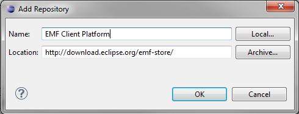
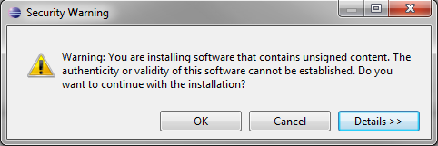
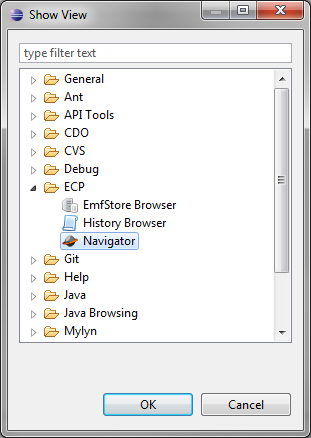

Follow the steps below to install the EMF Client Platform.
Step 1: Get EclipseTo install the EMF Client Platform, you need a running Eclipse. The easiest way to get started is to use the latest modeling edition.
Step 2: Installation using the update siteIn Eclipse, go to "Help >> Install New Software..." and add the EMF Client Platform update site by clicking on the Add... button in the upper right corner. Enter an arbitrary name and get the URL from our downloads page.

Next, make sure that the options "Group items by category" and "Contact all update sites..." are unchecked and select all packages for installation.
Proceed in the installation wizard by repeatedly clicking Next until the installation starts. Midway through, you will get a warning message. Click OK to proceed.
When the installation has finished you are required to restart Eclipse. At this point, the EMF Client Platform is already fully installed into your Eclipse environment. Step 3: Importing the Example ModelIn order to see the EMF Client Platform in action, it is necessary to have a model to work with. If you already have your own model, you can skip this step. Otherwise, you can download this example model and add it into your workspace.
Step 4: Starting the EMF Client PlatformNow you can start the EMF Client Platform by running a default Eclipse Application in the debug configurations.
In the new runtime instance, add a new View by navigating to "Window >> Show View >> Other...", then select the view Navigator in the folder Unicase.
You may wish to drag the navigator view to the left side similar to the standard Eclipse Package Explorer view. In the navigator view, you can create a new project by doing "right click >> Other... >> New Project...". You can add model elements to the new project by right clicking on it and selecting the option "New Model Element". If you chose to use our example model, you will be able to add the model elements Library, Book and Writer.
When adding for example a Library, the model element editor (MEeditor) for the Library is opened in which the attributes and references of the model element, in this case the name of the library, can be edited. Furthermore, you can use the navigator to create children or siblings of the model element, depending on the structure of the underlying model. In this example, we can create Books and Writers.